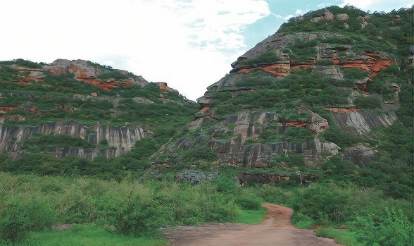
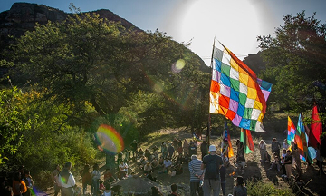
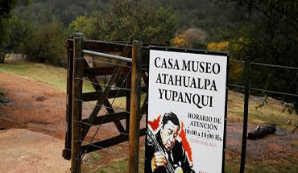
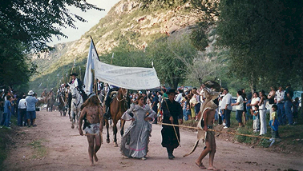

Pueblos originarios
Cerro Colorado fue habitado por diversas culturas que dejaron un legado arqueológico, reflejo de su forma de vida y sus creencias.
Cerro Colorado es un área natural protegida que resguarda un valioso patrimonio arqueológico, cultural y natural en el corazón de Córdoba.
Recorré sus paisajes, conocé su historia y viví una experiencia auténtica en contacto con la naturaleza.

Un legado cultural que sigue vivo en el paisaje.

Cerro Colorado fue habitado por diversas culturas que dejaron un legado arqueológico, reflejo de su forma de vida y sus creencias.

El músico y poeta encontró en este cerro una fuente de inspiración. Su obra inmortalizó la belleza y el espíritu del Cerro Colorado.

Los comechingones se caracterizaban por ser altos, construir viviendas semisubterráneas (casas pozo), practicar la agricultura (maíz, porotos, zapallo) y dejar cientos de morteros tallados en la piedra para rituales comunitarios.